Abandoned but not forgotten
ASTROBYTE
Space missions end.
Their stories should not.
INTERACTIVE 3D
MOON & MARS
BILINGUAL NARRATION
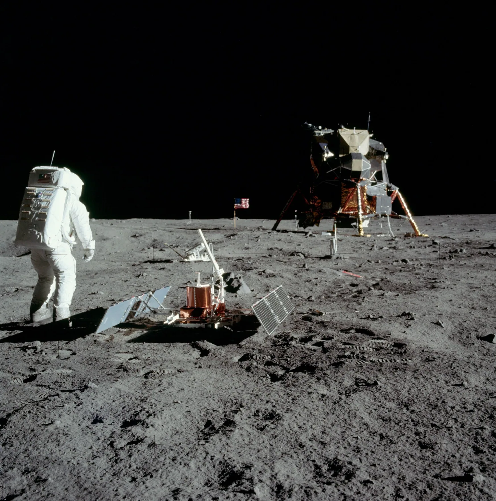
Apollo archive imagery supplied in team research · NASA
Space missions end.
Their stories should not.

Spacecraft parts and scientific instruments become physical records of discovery — but their stories are often hard to explore.
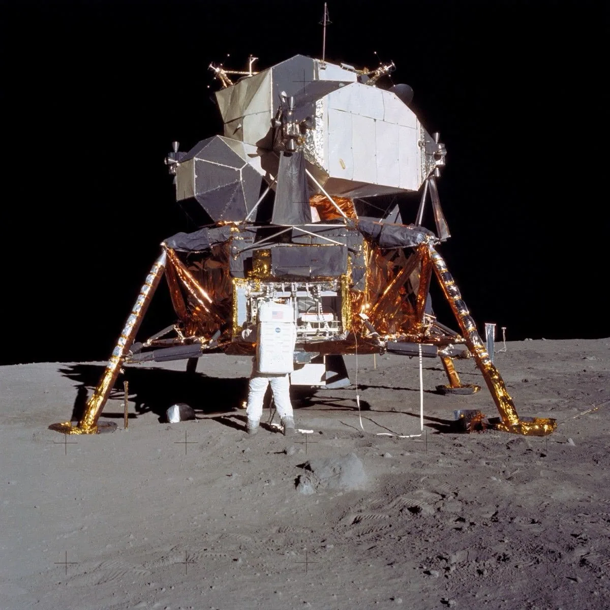
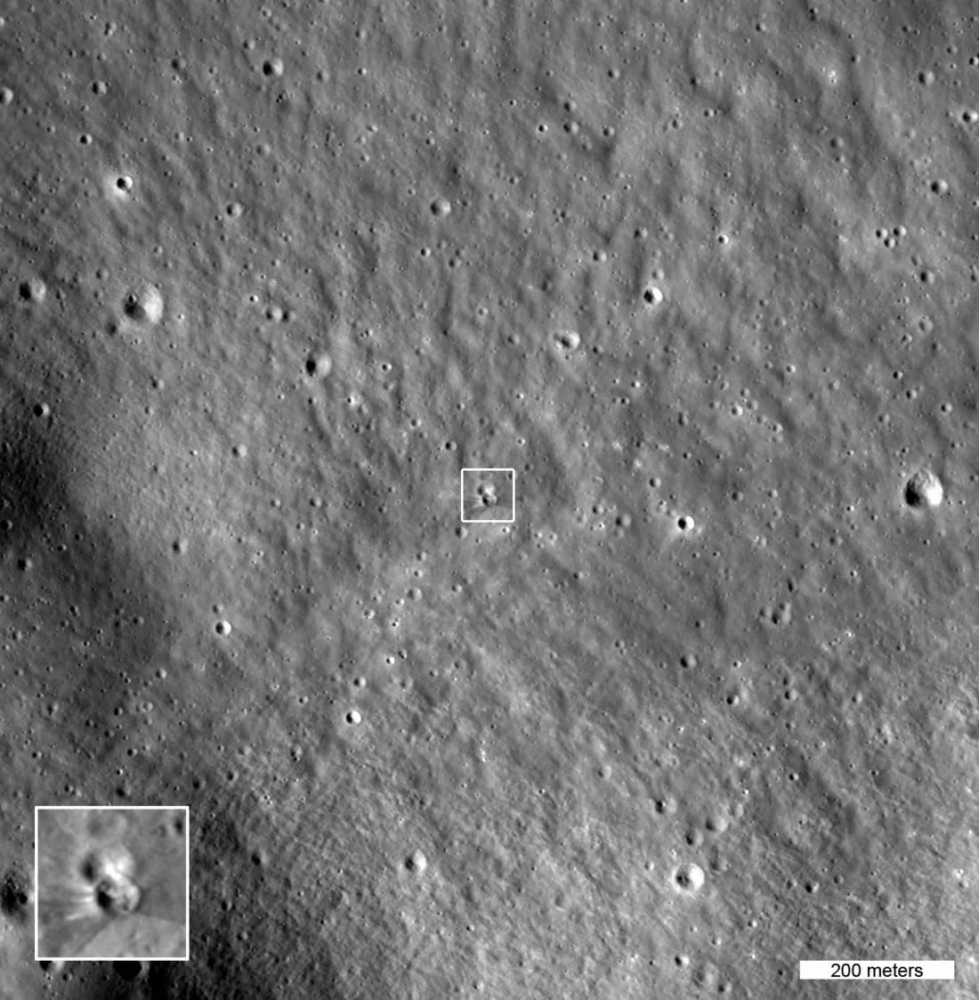
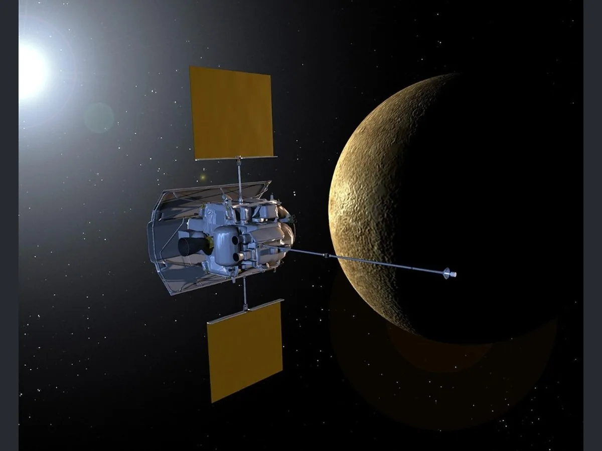
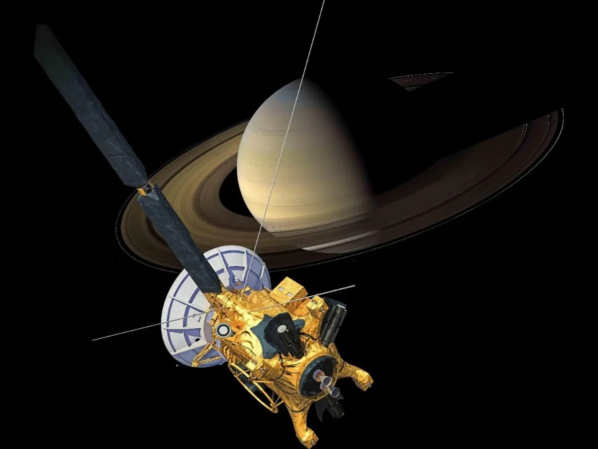
Apollo 11 · 12 · 14 · 15 · 16 · 17
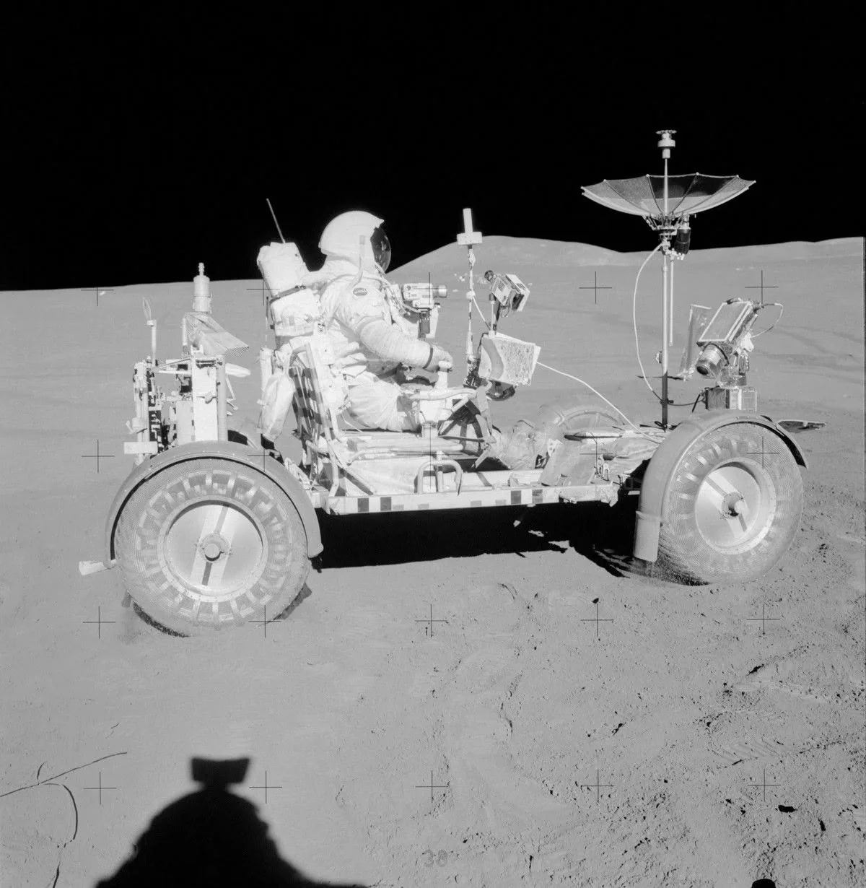
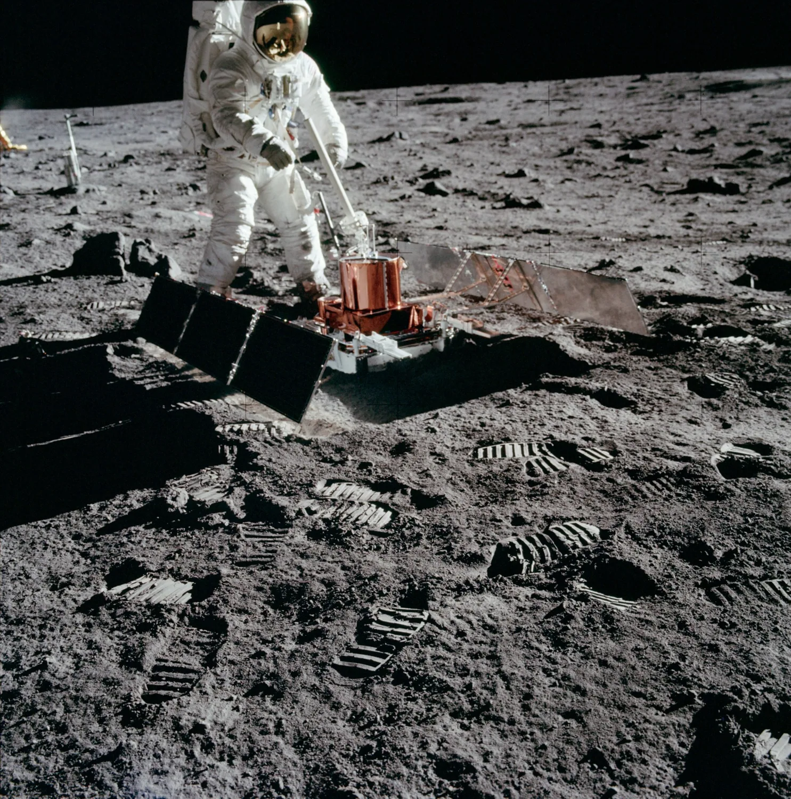
Every story distinguishes a retired mission from hardware still performing science.
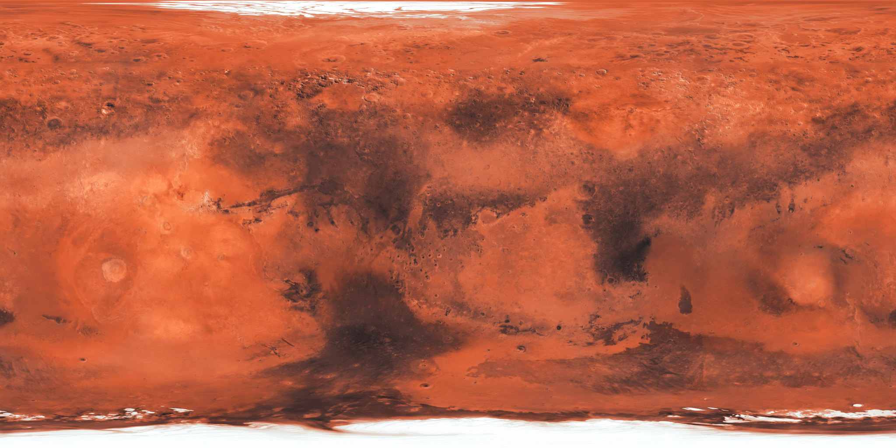
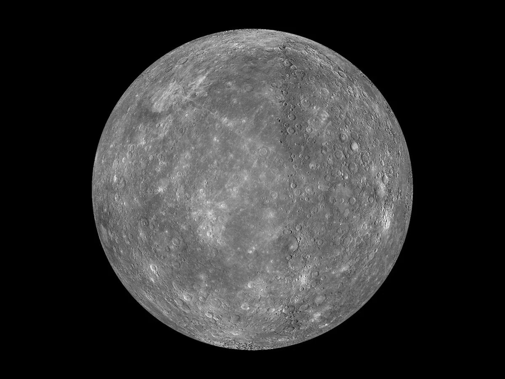
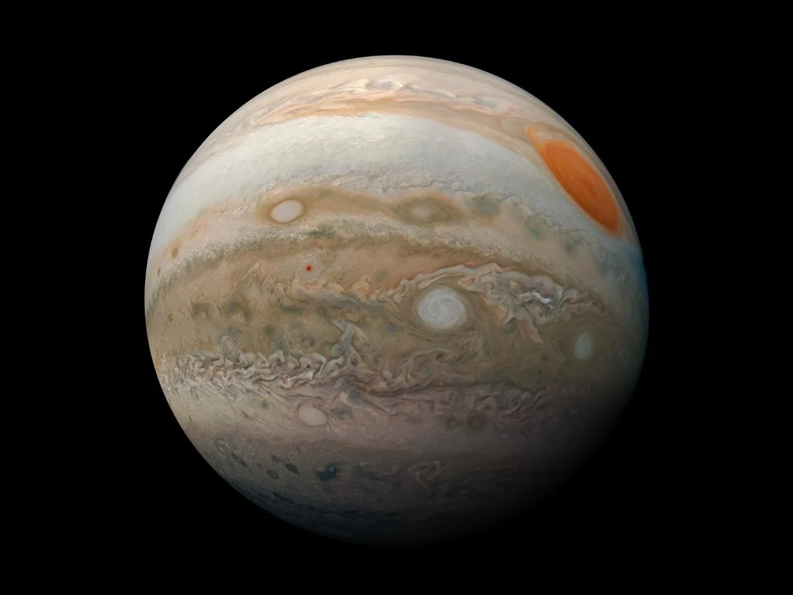
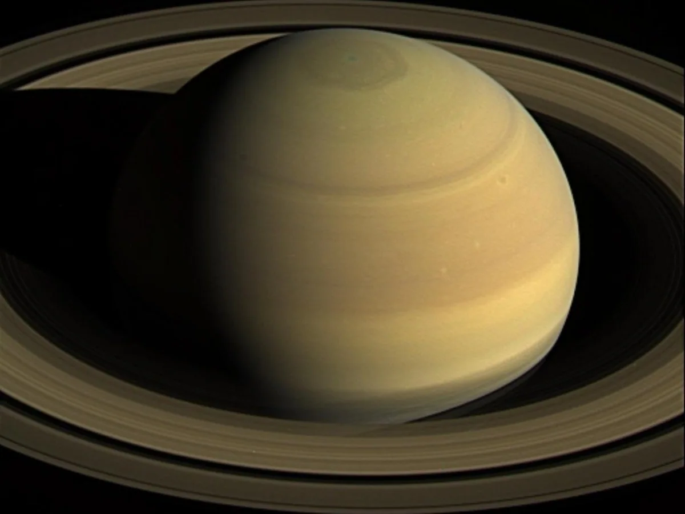
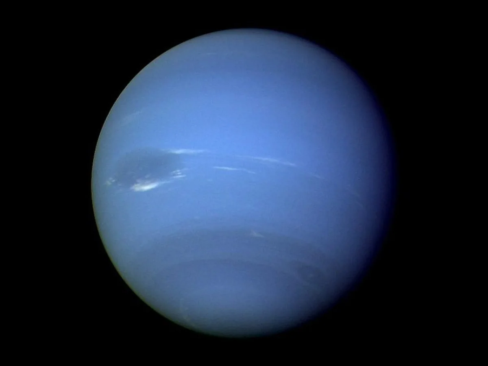
Visit the live archive. Choose a destination. Explore hardware, scientific meaning, and the stories left behind.
Independent 2026 NASA Space Apps project, not a NASA product or endorsed service.